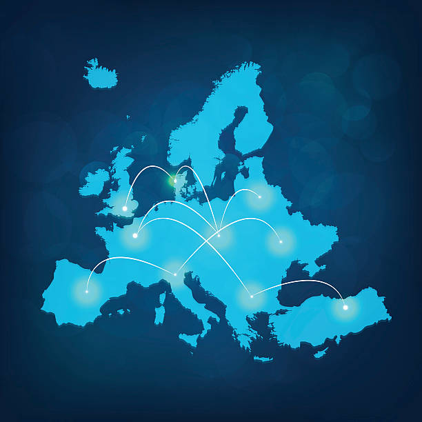

Spécification du projet
Fonctionnalités attendues
- Démarrer la simulation avec des valeurs personnalisées ou de référence
- Pause, sauvegarde et chargement de simulation
- Modification des facteurs influents :
- Amitié entre pays (niveau d’ouverture à l’échange international)
- Tensions entre les pays
- Probabilité d’événements
- Changement de la vitesse de simulation (x1, x5, x10)

Relations between countries in Europe
- Interactions avec la simulation :
- Créer des événements :
- Catastrophe naturelle (incendie, séisme, inondation)
- Guerre
- Influence sur les marchés internationaux
- Changement de politique d’un pays
- Mode passif : événements aléatoires, commerce, crises
- Visualisation des données sous forme de graphiques interactifs :
- Indicateurs économiques : PIB, PNB, croissance, inflation, investissement
- Facteurs sociaux : emploi, pauvreté, tourisme, impôts, coût de la vie
- Industries : agriculture, commerce, services
- Carte interactive des pays :
- Affichage des relations commerciales (flèches en fonction du volume)
- Changement de couleur des pays en fonction des indicateurs
- Statistiques détaillées par année/mois
- Journal quotidien affichant les événements en cours/passés
- Affichage de la date de la simulation
Shining Euro Sign